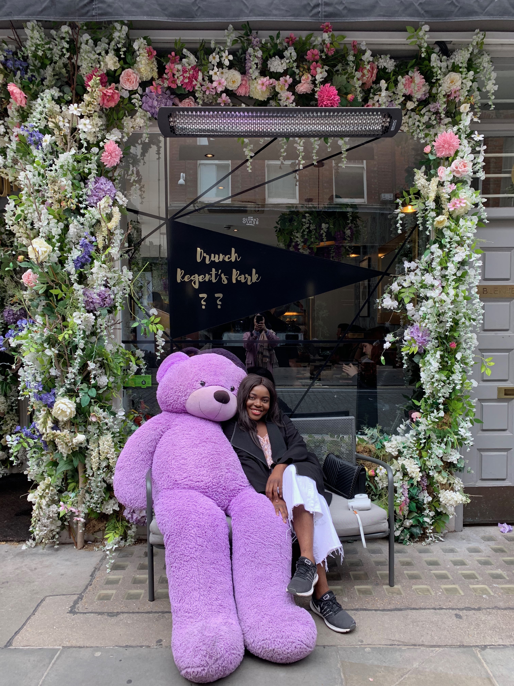
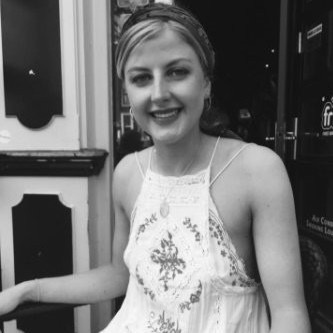

Meet Ashley

A.B / Ashley
Co-founder of Africa Express
Ashley is a creative, passionate about marketing, photography and exploration
Through this blog, she hopes to make contributions to the Africa of the future
Meet Laurianne
L.N / Laurianne
Co-founder of Africa Express
Laurianne interests among many others lie in travelling, entrepreneurship and web development
As she embarks on this project, she aims to bring Africa to the world
Meet Ele
E.B / Eleanore
Ele's a marketing guru with strong interest in Web development
She has a remarkable sense of style